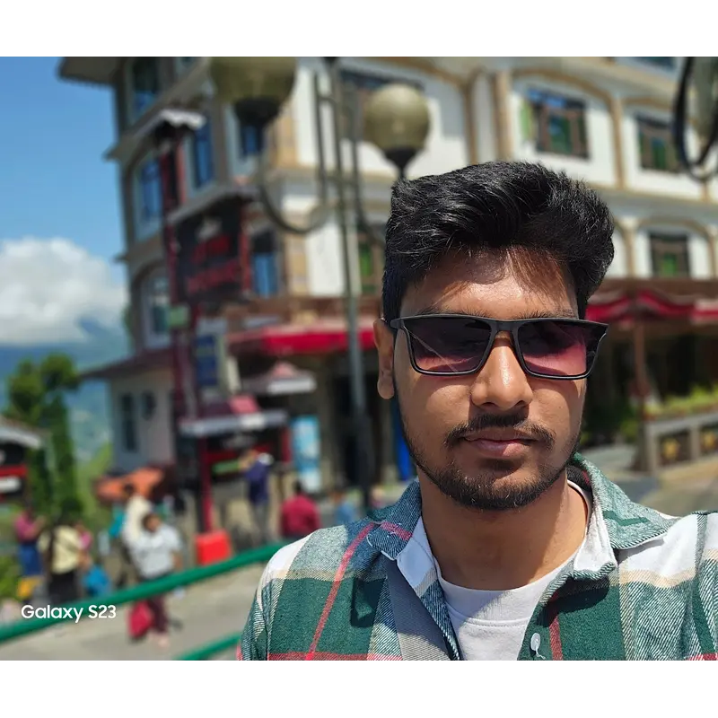

CV · BIO
Computer Vision & Biometrics
Passive and active liveness detection, face tracking, rPPG vitals sensing, and behavioural intelligence for enterprise security.

I’m an AI engineer building the systems that decide whether something can be trusted — deepfake and voice-clone detection, document forensics, biometric liveness, and post-quantum authentication. Including work deployed for a state law-enforcement agency.
Every system I’ve built comes back to authenticity — verifying a face, a voice, a document, or a signature while something is actively trying to fake it.
Passive and active liveness detection, face tracking, rPPG vitals sensing, and behavioural intelligence for enterprise security.
Multimodal detection across video, face-swap, identity spoofing, cloned speech, and tampered documents.
Retrieval-augmented generation, multilingual chatbots, natural-language-to-SQL, and privacy-safe local LLM deployments.
Frame-level audio deepfake localisation, speaker embeddings, anti-spoofing, and full STT–LLM–TTS voice pipelines.
Post-quantum digital signatures, hardware-backed key management, and tamper-evident QR authentication bound to the issuing authority.
Distributed multi-machine collection systems, resilient content extraction, and browser-extension tooling for messy real-world sources.
Simplified versions of the real thing, running in your browser — the same ideas the production systems are built on.
Dense facial landmark tracking combined with remote photoplethysmography — a pulse recovered from micro colour changes in the skin. A printed photo or a replayed video has no pulse, so it fails the check without the user doing anything.
Speaker and face embeddings projected down to two dimensions. Authentic and synthetic samples start entangled and pull apart as the model finds a boundary — the margin between those clusters is what detection accuracy really is.
Six systems spanning government intelligence tooling, pharmaceutical anti-counterfeiting, audio forensics, and offline AI.
Frame-level temporal localisation of spliced and synthetic speech. Rather than labelling a whole clip, it marks exactly which frames were manipulated — using a dual-branch design that reads speaker prosody and synthesis artefacts separately before fusing them, trained against simulated splicing and degraded real-world audio.
Post-quantum cryptographically secured QR generation and verification for tamper-evident pharmaceutical and document authentication, binding payload integrity to the issuing authority with hardware-held signing keys.
A pre-production platform for large-scale, multilingual social media collection supporting departmental intelligence workflows at the West Bengal Police AI Cell, with reliable Bengali and English text extraction where conventional OCR proved inadequate.
A production RAG system with two-stage schema-based retrieval, powering a Bengali/Hindi/English chatbot — including romanised input — over a structured knowledge base, plus an interactive mapping and semantic search platform.
A fully local, privacy-preserving voice assistant: wake-word detection into Whisper speech-to-text, a local LLM, and Kokoro text-to-speech. It only touches the network when explicitly asked to.
A context-aware natural-language-to-SQL system letting non-technical users query a structured police records database conversationally, with multi-turn follow-up resolution. A local LLM keeps sensitive queries off cloud APIs entirely.
Both solve the same problem from opposite ends — one detects forgery after the fact, the other makes forging impractical up front.
Two branches read the audio independently: one hears human prosody, the other hunts for the spectral glitches synthesis leaves behind. Neither is reliable alone against a real clip with a fake sentence spliced in — the fusion is what localises the seam. Shown at concept level; the production model differs.
Signing keys stay in hardware and never reach application code. Every code carries a signature bound to the issuing authority, so a tampered payload fails verification rather than silently passing. Shown at concept level; the production system differs.
I build intelligent systems with a research-first approach — mostly in computer vision, biometric security, and applied cryptography. Almost everything I’ve worked on sits at the moment a system has to make a judgement call: is this face live, is this voice cloned, has this document been altered, was this signature really issued by who it claims?
That work has ranged from a social media intelligence platform for the West Bengal Police AI Cell, to post-quantum authentication for pharmaceutical supply chains, to a fully offline voice assistant that never phones home. What connects them is that they all had to survive contact with the real world — bad audio, adversarial users, unreliable networks, and languages most models were never trained on.
I’m continuing that direction through an M.Tech in Computer Science at IIT Patna, and I’m most interested in problems where the research is genuinely hard and the deployment matters just as much.
Research or engineering roles in applied AI — particularly computer vision, biometric security, audio and speech ML, or applied cryptography. I’m equally comfortable in a research-heavy position or shipping and maintaining production systems, and I’ve done both simultaneously for the last two years.
Authenticity under adversarial pressure. Deepfake detection, liveness checks, document forensics, and post-quantum signatures are all answers to the same question — can this be trusted when someone is actively trying to fake it? The scraping and RAG work is the other half: getting reliable data out of messy, multilingual, real-world sources.
Yes. I built a multilingual social media intelligence platform for the Artificial Intelligence Cell of the West Bengal Police, and through the Incubation Centre at RKM Vidyamandira I’ve delivered biometric security and synthetic fraud prevention systems aimed at finance, insurance, and legal use cases.
Because the realistic attack isn’t a fully generated voice any more — it’s a real recording with one fabricated sentence spliced into it. A clip-level classifier sees 90% authentic audio and passes it. Predicting per 20 ms frame, and separately predicting where the boundary is, turns the model into a forensic tool that can point at the seam instead of just voting on the whole file.
Post-quantum cryptography in real production settings — hardware key lifecycle management, and the practical constraints of fitting post-quantum signatures into payload-limited formats like QR codes. On the ML side, robustness: making forensic models survive codec compression, background noise, and reverb rather than only clean lab audio.
Open to research collaborations and engineering roles in AI, biometrics, forensics, and applied security.
namrasamanta@gmail.com